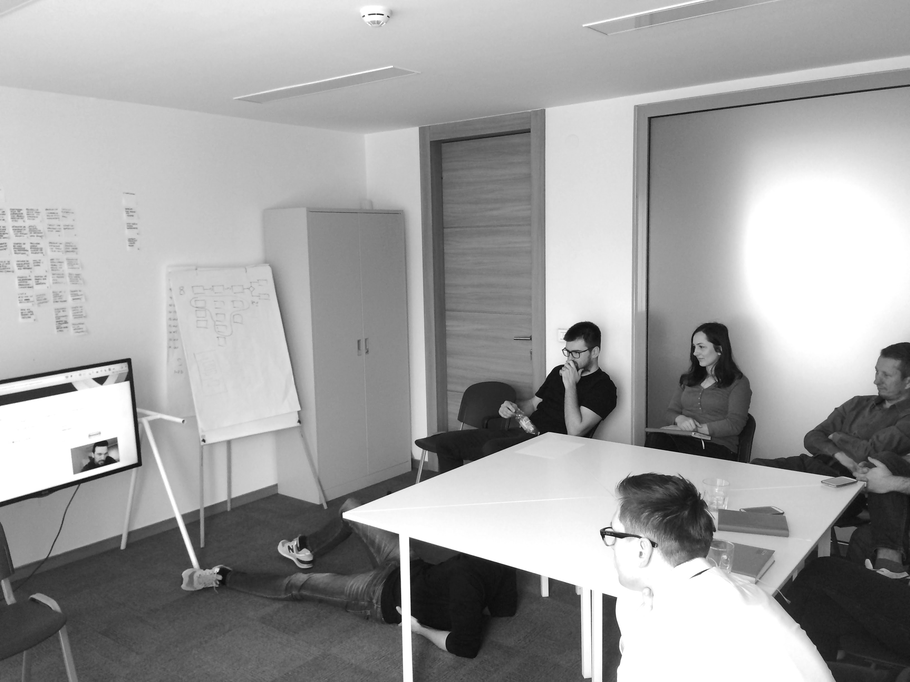

The challenge
Kolektiv grew organically from a small team of self thought developers and entrepaneurs, into a company employing over 40 people. Along the way some common product development practices were skipped – it was time to bring some of those into their process.
Where to start?
There were a number of areas where Kolektiv’s product development process could be improved, but a complete lack of user involvment alarmed me. I suggested we start with this.
Given that they had a mature product, we decided that a good starting point would be running some usability tests to figure out whether there were any major issues with the existing product.
Running usability testing
I started with education about usability testing; what it was, why it was useful, how to conduct usability tests and how to analyse the results.
We quickly turned to the practical side of things; the team recruited some users, we wrote a test script together and ran a couple of internal sessions to give everyone some practice and much needed confidence.

The testing setup was kept fairly simple:
- A MacBook runnig Morae for interaction and user recording
- PostIt Notes and Sharpies for note taking
- A test script
- A facilitator (me)
- A note taker
The output
Once we wrapped up all the sessions, we organised and summarised our notes. I prepared a report and a presentation higlighting the key findings.
I also put together a 20 minute highlights reel of footage from the testing sessions. This was the most valuable output as it allowed a wider audience, including the marketing and sales teams, as well as the CEO to see the results of the testing, first hand.
The team’s reactions ranged from laughter to shock and disbelief – seeing real users interact with your product is always a powerful experience.
The outcome
This was one of the most rewarding consulting engagements I've ever done.
There was complete buy-in into the findings of the usability testing from everyone, right up to the CEO.
As a result, Kolektiv have started making changes to address some of the findings of the testing. More importantly, they are now committed to running usability testing as part of their product development process.